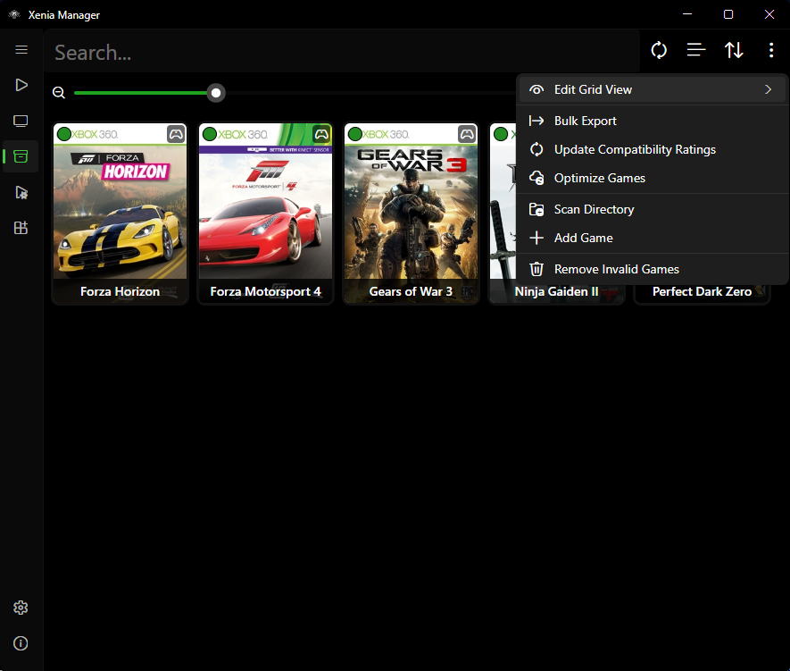
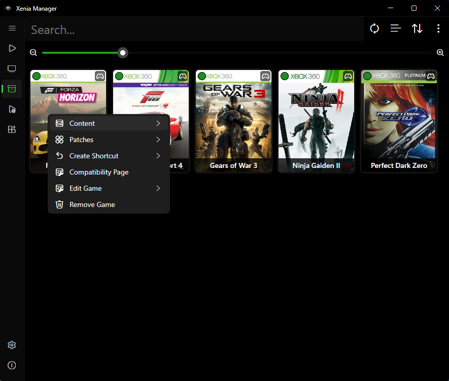
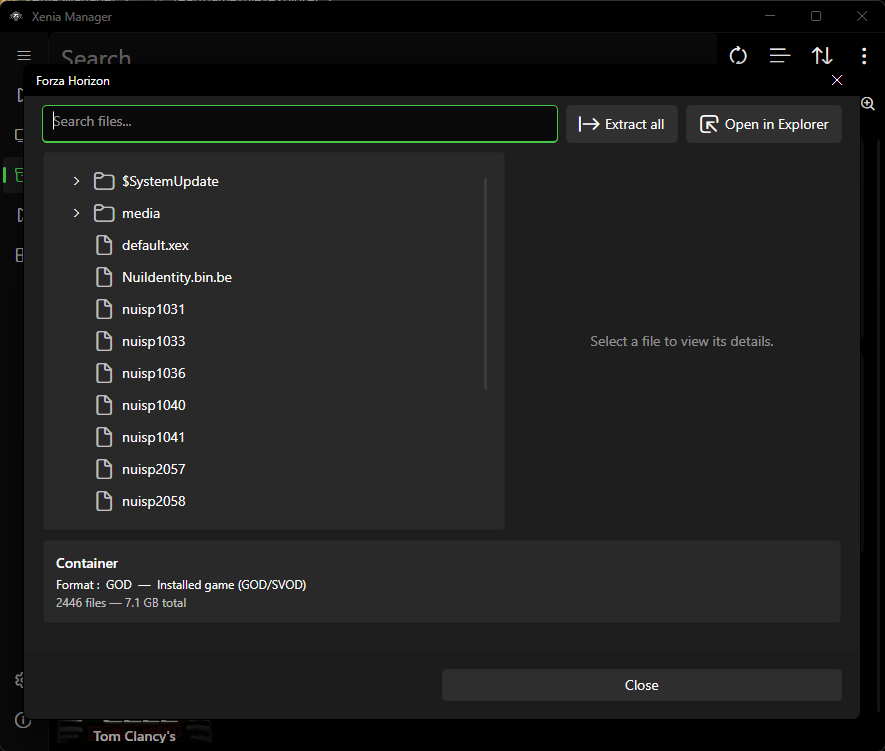
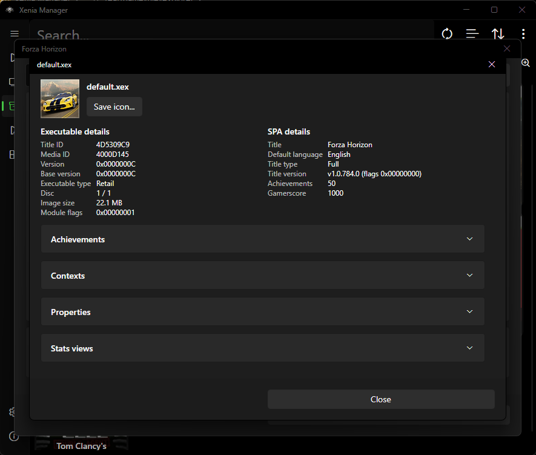
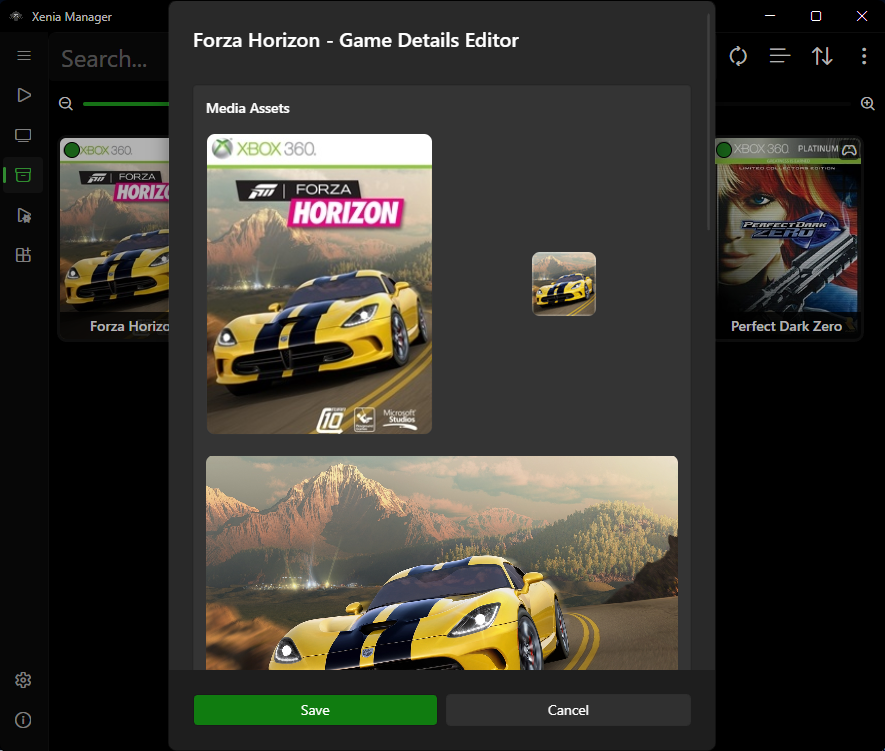
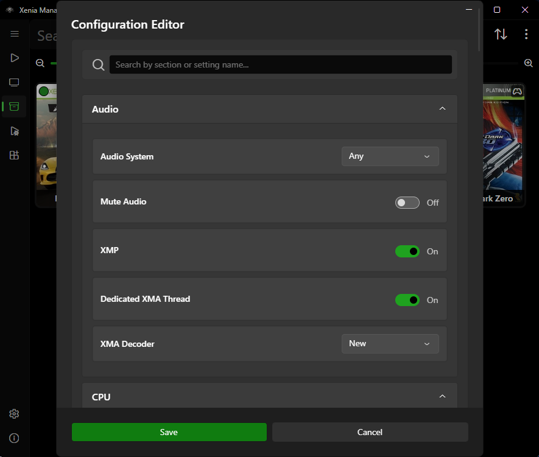

Library¶
The Library page is the home screen: your scanned games, their artwork, compatibility, playtime, and every per-game action (launch, edit, content, patches, settings, shortcuts).

Scanning and Adding Games¶
Scan a directory¶
- Go to Library → Options (library toolbar).
- Choose Scan Directory and pick the folder containing your dumps.
- The Manager walks the folder, parses each candidate with its built-in Xbox/Xenia file parsers (ISO/XISO, XEX, STFS/SVOD containers, ZAR archives, and related formats), extracts Title ID / Media ID, and queries the title database.
- New games are appended to
Config/games.json. Artwork is resolved in this order:- Embedded artwork from the game file itself (XDBF SPA icon, e.g.
0x8000) whenUse embedded artworkis on (default). - Downloaded artwork from the marketplace database (
x360db), cached underCache/Database/x360db/andCache/Images/.
- Embedded artwork from the game file itself (XDBF SPA icon, e.g.

Auto-detect and multi-disc¶
- Auto-detect new games (on by default): when files appear in your games directory, the Manager can pick them up without a manual rescan. A notification with a rescan action appears (short cooldown to avoid spam). Toggle in Manager Settings.
- Multi-disc games: when two entries share a title but differ by disc (Media IDs), the Manager asks whether to merge them into one entry with a disc picker. Enable Auto-Merge Multi-Disc Games to skip the prompt in the future.
- The merged entry remembers
last_played_disc- the disc-selection popup pre-selects the disc you launched last time.
What is stored per game¶
Each entry in games.json tracks:
game_id(Title ID) andmedia_id, plusalternative_idlist used for compatibility lookupstitle(uses Media ID for title matching whenUse MediaId for titleis on)xenia_version- which emulator variant this game launches with (Canary / Mousehook / Netplay / Custom)compatibility- cached rating from the compatibility databaseartwork- paths to box art / iconsfile_locations- game file, config, patch pathsplaytime(minutes),last_playedtimestamp,last_played_disc
Views, Sorting, and Search¶
Toggle between Grid view (artwork tiles) and List view (table) from the Library toolbar. Your choice persists.
Grid view options¶
Configurable in Manager Settings:
- Show/hide game title on the tile (default: shown)
- Show/hide compatibility rating badge (default: shown)
- Show/hide Xenia version badge (default: hidden - useful when you mix Canary/Mousehook/Netplay per game)
- Zoom level for tile size
- Double-click tile to launch (default off - when off, single-click launches and double-click does nothing)
List view columns¶
Toggle each column in settings: compatibility rating, playtime, Xenia version, last played, game icon, Title ID, Media ID.
Sort and filter¶
- Sort by title, playtime, last played, compatibility, and similar options; flip ascending/descending from the toolbar.
- Use the search box to filter by title or Title ID. Sorting applies to the filtered set.
Right-Click Menu (Per-Game Actions)¶

Typical entries (availability depends on game state):
- Launch - start the game from its Library tile (double-click when double-click-to-launch is enabled in settings). Uses the game's assigned Xenia version. For multi-disc games, pick the disc first.
- Edit Game > Information - fix title, IDs, artwork in the Game Details Editor (see below).
- Edit Game > Settings - per-game Xenia config overrides (see Xenia Settings).
- Content - Saved Games, Achievements, Title Updates, and Marketplace Content views (see Content). Content > Screenshots opens
Emulators/<Variant>/screenshots/<TitleID>/in Explorer (shows a notice when none exist) and Content > Save Backups opensBackup/<Title>/Game Saves/(only when automatic backups exist). - Patches - Download, Install Local (
.tomlfile), Add, Configure, Export, and Remove (see Patches). - Edit Game > Mousehook Controls - only meaningful for Mousehook-assigned games (see Mousehook).
- Create Shortcut > Desktop / Steam - see Steam Shortcuts. Both are Windows-only and ask for a disc first on multi-disc games.
- Compatibility Page - opens the compatibility database URL for the game when one is known.
- Manage Discs - add, remove, or relabel discs in a merged multi-disc entry (changes save to
games.json). - Browse Game Files - open the in-app file explorer for the game's container (see Browse Game Files). Includes Open in Explorer to reveal the underlying file on disk.
- Remove Game - drops the entry from
games.json. A second prompt asks whether to also delete the game's installed content; your game files themselves are never deleted.
Multi-select is supported for bulk operations; the toolbar shows the selected-games count.
Library toolbar extras¶
Beyond scan/add/remove, the Library toolbar offers:
- Drag and drop - drop
.iso/.xex/.zarfiles directly onto the Library to add them (same pipeline as Add Game, including the Xenia-version picker for multi-variant setups). - Bulk Export - bulk-create desktop
.lnkfiles (folder picker) or Steam shortcuts for every selected game at once. - Update compatibility ratings - re-fetch ratings from the databases, with a picker for which set to refresh (game, Mousehook, Netplay).
- Optimize Games - bulk-apply community optimized settings to all per-game configs at once.
- Remove invalid games - prune entries whose files no longer exist on disk.
Compatibility ratings¶
The badge colors map to these ratings: Unknown, Unplayable, Loads, Gameplay, Playable. Mousehook-assigned games additionally show the Mousehook support rating, and Netplay games show Netplay status rows (working-public/tested-locally/only-local/system-link). Ratings are advisory - hardware and game revision matter.
Browse Game Files¶

Browse Game Files (right-click a game → Browse Game Files) opens an in-app explorer for the game's files without leaving the Manager. For multi-disc games, pick the disc first. Open in Explorer in the dialog reveals the underlying file on disk.
Supported containers¶
| Source | What opens |
|---|---|
| Folder (extracted) | Browsed directly; SVOD folders are read as SVOD packages |
| ISO / XISO | Browsed as disc image |
STFS (CON, LIVE, PIRS) |
Browsed as package |
| SVOD | Browsed as package |
| ZAR | Browsed as archive |
| XEX file | Opens the containing folder |
The bottom card shows the detected format and totals (file count, total size). Files that are none of the above show a load error.
Browsing, search, and selection¶
- Tree - folders first, full paths in tooltips. Double-click (or right-click → Open) previews a file; folders expand.
- Search - filters by file name (case-insensitive), keeps parent folders visible and expands matches.
- Multi-select - select several files/folders for bulk extract. The details pane only shows when exactly one file is selected.
- Details pane - shows name, size, and path for the selected file. Images preview inline. XEX files show a summary (Title ID, Media ID, version, executable type, icon with Save icon). STFS packages show package details (display name, Title ID, content type, size).
File previews¶
| File type | Behaviour |
|---|---|
Text (.txt, .ini, .cfg, .json, .log, .xml) |
Read-only viewer with detected encoding. Files over ~1 MB are not previewed. |
Images (.png, .jpg, .jpeg, .bmp) |
Previewed inline in the details pane. |
XEX (.xex) |
Opens the XEX details dialog (see below). |
GPD (.gpd) |
Opens a read-only viewer with the achievements list and the raw entries table (namespace, ID, size). |
| Nested container (STFS package inside the game) | Opens in a new Browse Game Files window. Temporary files are cleaned up afterwards. |
Files over ~64 MB (other than text) are not previewed - extract them instead.
XEX details dialog¶

- Executable details - Title ID, Media ID, version, base version, executable type (Retail / Debug), disc number, image size, module flags. Save icon exports the embedded icon as PNG.
- SPA details - title, default language, title type and version, achievement count, total gamerscore. Shown when the XEX contains embedded SPA data.
- Expanders - Achievements (with language picker when several languages exist, lock/unlock toggle, per-achievement icon, name, description, gamerscore), Titles, Contexts, Properties, and StatsViews.
Extracting files¶
- Select files and/or folders (or nothing for Extract all).
- Choose Extract and pick a destination folder.
- A progress dialog shows the current file,
file n of m, and done/failed counts. The dialog cannot be closed until the operation finishes.
Extraction preserves folder structure. Failures are reported at the end with the first error shown.
Game Details Editor¶

Use this when a scan misidentifies a game or artwork is missing:
- Title - display name in the Library. Fix typos or regional naming here.
- Title ID / Media ID / Alternative IDs - identifiers used for database lookups. Only change these if you know the correct IDs; wrong IDs break compatibility, artwork, and patch matching. Prefer re-scanning with
Use MediaId for titletoggled (see Manager Settings) before hand-editing IDs. - Artwork - replace or refresh box art / icons. Custom artwork is stored under
GameData/<Title>/Artwork/(downloaded artwork is cached underCache/Images/). - Xenia version - which variant launches this game. Change here instead of globally when only one game needs Mousehook or Netplay.
Changes save back to games.json immediately.
Game Settings Editor¶

This edits the per-game configuration profile: overrides that apply only to this title, leaving the global emulator config untouched. Typical uses:
- Graphics or audio fixes that only one game needs.
- Performance tweaks (resolution scale, vsync, etc.) per title.
- Assigning a different Xenia variant or config file to this game.
The editor works on the same dynamic config model as the global Xenia Settings page - every field maps to a real key in the game's .toml config.
Unknown Games¶
Game shows as "Unknown Game"¶
- Verify the dump is complete and not corrupted (re-dump or re-copy if the file is truncated).
- Try toggling Parse game details with Xenia in Manager Settings - for some formats, launching Xenia's own parser extracts titles the fast parser misses.
- Toggle Use MediaId for title and rescan.
- As a last resort, open the Game Details Editor and fill in the title and IDs manually, then use Refresh artwork.
If the file itself will not parse at all, Xenia would not boot it either - fix the dump first.
Tips¶
- Keep one folder per game disc and avoid renaming files inside extracted containers; the parsers rely on internal headers, not filenames.
- After moving your games folder on disk, rescan the new location and remove stale entries - file paths are stored relative for games inside the
Games/folder, but absolute for games elsewhere. - Back up
Config/games.jsonbefore bulk edits; it is a plain JSON file and easy to restore.